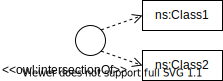

This document describes Chowlk, a visual notation specification to construct ontological diagrams. It provides a set of visual blocks to represent each element from the OWL ontology implementation language. The specification allows the representation of high-level as well as fine-grained constructs from the OWL language, giving the user the freedom to choose the level of expresiveness for their conceptualization. In order to use the visual blocks from this specification you could also your favourite diagraming tool but we recomend using diagrams.net as the following resources are available for working with diagrams.net.
Chowlk Library: This diagrams.net library contains the whole set of visual blocks detailed in this document.
Code Generation Service: A web service to automatically generate the OWL code of your ontology if you follow this specification.
2. Specification
This sections gives detailed information about the diagraming blocks used to represent the OWL elements used in the construction of an ontology. The specification is structured around the three main elements in an ontology: owl:Class, owl:ObjectProperty and owl:DatatypeProperty. Each table in the sub-sections contains not only the diagram block but also the equivalent owl code, and a description of the element.
2.1 Basic Elements
Diagram BLOCK
Description
OWL Element
Block to represent named and unnamed classes, as well as individual elements within the ontology conceptualization. The content of the block should be accompanied with the prefix and the name of the concept on order to fully identify it.
owl:Class
Block to represent named and unnamed classes, as well as individual elements within the ontology conceptualization. The content of the block should be accompanied with the prefix and the name of the concept on order to fully identify it.
owl:Individual
Standard way to represent object properties. Variations can apply to the type of line or the connections style depending on the range or domain specification. For more details see section 2.10.
owl:ObjectProperty
Special arrow to indicate sub-class relationship between two classes.
owl:subClassOf
Special arrow to represent several relationships between elements of this specification. It can be used to indicate rdf:type relationships, or to connect a owl:unionOf axiom with all the concepts it is composed of.
rdf:type
Standard way to represent datatype properties attached to a specific owl:Class element. Variations can apply to the type of outer line depending on the domain and range specification. For more details see section 2.11.
owl:DatatypeProperty
Alternative way to represent object properties. Mainly used to represent relations between the properties like rdfs:subpropertyOf.
owl:ObjectProperty
Alternative way to represent datatype properties. Mainly used to represent relations between the properties like rdfs:subpropertyOf.
owl:DatatypeProperty
Block to indicate all the namespaces used in the ontology. The first namespace is the URI used for the current ontology. It is obligatory to include all the namespaces being used in order to use the ontology converter service.
@prefix base: <http://namespace.com#>
Block to indicate the annotation properties describing the ontology. The annotations in use should include the prefix and the annotation name, as indicated in the figure. If custom annotations are utilized, the namespace block should include the prefixes and namespaces for those annotation properties.
owl:AnnotationProperty
2.2 Classes
2.2.1 Class Definition
Diagram BLOCK
Description
OWL Element
Definition for a named class.
owl:Class
Definition of an unnamed class. Usually used to represent axioms.
Definition of an unnamed class to represent logical combinations between other classes, such as AND or OR operators
2.2.2 Sub-Class
Diagram BLOCK
Description
OWL Element
Option 1 to express that ns:Class2 is sub-class of ns:Class1.
ns:Class2 owl:subClassOf ns:Class1
Option 2 to express that ns:Class2 is sub-class of ns:Class1.
2.2.3 Equivalent Classes
Diagram BLOCK
Description
OWL Element
Option 1 for equivalent classes.
ns:Class1 owl:equivalentClass ns:Class2
Option 2 for equivalent classes.
2.2.4 Disjoint Classes
Diagram BLOCK
Description
OWL Element
Option 1 for disjointness between classes.
ns:Class1 owl:disjointWith ns:Class2
Option 2 for disjointness between classes.
2.2.5 Intersection of Classes
Diagram BLOCK
Description
OWL Element
Option 1 for intersection between classes.
owl:intersectionOf (ns:Class1 ns:Class2)

Option 2 for intersection between classes.
2.2.6 Union of Classes
Diagram BLOCK
Description
OWL Element
Option 1 for union of two concepts.
owl:unionOf (ns:Class1 ns:Class2)
Option 2 for union of two concepts.
2.2.7 Complement of Classes
Diagram BLOCK
Description
OWL Element
Option 1 for complement of two concepts.
owl:complementOf ns:Class1
2.3 Object Properties
2.3.1 Domain and Range
Diagram BLOCK
Description
OWL Element
Option 1 for object property ns:objectProperty without domain and range.
ns:objectProperty rdf:type owl:ObjectProperty .
Option 2 with object property ns:objectProperty without domain and range.
Option 1 for object property ns:objectProperty with domain and range.
Option 2 object property ns:objectProperty with range but without domain.
2.3.2 Universal Restrictions
Diagram BLOCK
Description
OWL Element
Option 1 for a universal restriction between 2 concepts. ns:Class1 is subclass of an anonymus concept which has an object property ns:objectProperty, and all the individuals for this property shall come from ns:Class2
Option 2 for a universal restriction with an object property.
Option 3 for a universal restriction with an object property.
2.3.3 Existential Restrictions
Diagram BLOCK
Description
OWL Element
Option 1 for an existential restriction between 2 concepts. ns:Class1 is subclass of an anonymus concept which has an object property ns:objectProperty, and some the individuals for this property shall come from ns:Class2
Option 2 of an existential restriction between 2 concepts.
Option 3 of an existential restriction between 2 concepts.
2.3.4 Cardinality Restrictions
Diagram BLOCK
Description
OWL Element
Cardinality restriction of a concept on an object property. ns:Class1 is subclass of an anonymus concept which has an object property ns:objectProperty, and shall have at least N1 and at most N2 individuals from class ns:Class2. If the N2 element is equal to the letter N, it means owl:maxQualifiedCardinality does not exist.
Option 1 for an universal restriction between a concept and a datatype. ns:Class is subclass of an anonymus concept which has a datatype property ns:datatypeProperty, and all the values must be of type datatype.
Option 2 for an universal restriction between a concept and a datatype.
2.4.3 Existential Restrictions
Diagram BLOCK
Description
OWL Element
Option 1 for an existential restriction between a concept and a datatype. ns:Class is subclass of an anonymus concept which has a datatype property ns:datatypeProperty, and some values must be of type datatype.
Option 2 for an existential restriction between a concept and a datatype.
2.4.4 Cardinality Restrictions
Diagram BLOCK
Description
OWL Element
Cardinality restriction of a concept on a datatype property. ns:Class is subclass of an anonymus concept which has an datatype property ns:datatypeProperty, and shall have at least N1 and at most N2 values. If the N2 element is equal to the letter N, it means owl:maxCardinality does not exist.
The following section applies to both type of properties: owl:ObjectProperty and owl:DatatypeProperty. For demonstration purposes we will only use object properties in the examples. It is also indicated if the OWL construct applies to object properties, datatype properties, or both.
2.5.1 Sub-Property
Diagram BLOCK
Description
OWL Element
Option 1 for a sub-property relationship between two object properties. This construct applies to owl:ObjectProperty and owl:DatatypeProperty.
The following examples were constructed using the diagrams.net graphic environment, and the guidelines detailed in this specification. Aditionally, the OWL code for each case was generated using the Code Generation Service.
3.1 SAREF for Building Ontology
The following figure depicts the SAREF4Building Ontology. The OWL code is available in this link.
3.2 BIMERR Building Ontology
The following figure depicts the BIMERR Building Ontology. The OWL code is available in this link.
4. CHOWLK Code Generation Service
The above specification comes together with the Code Generation Service that automatically transform your conceptualization into OWL code, that later can be read by any other ontology editor like Protegé. So the use of our specification is two fold, on the one hand it provides you with the resources to construct fine grained conceptualizations of your ontologies and also a way to automatically generate the OWL code of your model.
IMPORTANT NOTE
In order to being able to use the service the following aspects of the model must be ensured:
The ontological diagram always should include the namespace block, indicating all the prefixes and namespaces used in the ontology.
The metadata block must contain the actual annotation property elements, aliases are not allowed. For instance, the user should type owl:versionInfo instead of version to indicate the current version of the ontology.
The user must ensure that the source and target of all the arrows in the model are connected to a block. This means that in order to represent relationships between object or datatype properties the user should use the Option 1 for these constructs.
4.1 Adoption
Our visual notation is being used to develop ontologies in the following projects and is part of the suite of tools of the Linked Open Terms methodology.
BIMERR is a EU funded project which aims to provide a suite of interoperable tools to support AEC stakeholders throughout the energy efficiency renovation process of existing buildings.
DELTA is an EU funded project under Horizon 2020. It proposes a demand-response management platform that introduces scalability and adaptiveness into the Aggregator’s DR toolkits.
VICINITY is an EU funded project under Horizon 2020. It proposes a platform and ecosystem that provides “interoperability as a service” for infrastructures in the Internet of Things.
EasyTV is a H2020 European project which main goal is to provide equal access to television and audio-visual services to that all users, especially persons with disabilities and users with special needs.